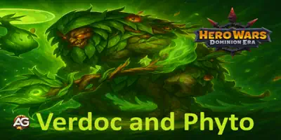

500 Essência dos Elementos
500 Essência dos Elementos
 100 Esmeraldas
100 Esmeraldas
 1 Baú de Recursos de Herói
1 Baú de Recursos de Herói
 10 Baús Pequenos de Pedra de Skin
10 Baús Pequenos de Pedra de Skin
 50
50
 5
5


Guia dos Titãs Verdoc e Phyto para Hero Wars: Dominion Era
publicado: Outubro 2025.

Melhores Habilidades de Fusão de Totens Classificadas para Hero Wars: Dominion Era
Atualizado: Setembro 2025.

Melhores Bandeiras e Padrões de Guerra em Hero Wars: Dominion Era
Atualizado: Agosto 2025.
 Calendário de Hero Wars: Dominion Era
Calendário de Hero Wars: Dominion Era Tier List 2025 de Hero Wars: Dominion Era — Melhores Heróis Classificados
Tier List 2025 de Hero Wars: Dominion Era — Melhores Heróis Classificados
 Resgate seus Presentes Diários em Hero Wars: Dominion Era - Web/FB
Atualizado: diariamente.
Resgate seus Presentes Diários em Hero Wars: Dominion Era - Web/FB
Atualizado: diariamente.